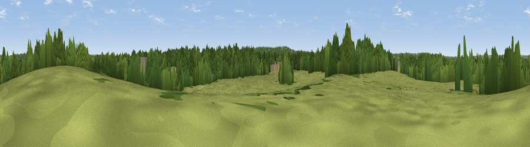

High Hill
#45648 in England · top 95% of its area beats it · near West EndWhere it is
The exact computed spot (SU 46736 16379). Click the marker for map links.
The view, rendered

A 360° render of this exact spot computed from the terrain model, tree cover and land cover — summer colours, afternoon light, calibrated against photographs of famous viewpoints. Real trees, hedges and buildings will differ in detail.
The panorama
Grey silhouette: terrain skyline in each direction (720 bearings, Earth curvature and refraction included). Dashed green: skyline with trees (+15 m) and buildings (+8 m) as obstacles. Blue strip: how far the ground is visible on each bearing.
Where the view opens
Wedge length = distance to the farthest visible ground on that bearing (vegetation-aware). Rings at 10, 25 and 50 km.
What fills the view
48% woodland · 42% grassland · 9% built-up ·
Angular shares of the visible panorama (visual magnitude), not map area. Landscape diversity 0.43 (0–1 Shannon).
Key numbers
More beautiful places nearby
The staircase of upgrades: each row has a higher view potential than everything closer. Driving times are estimates from straight-line distance, calibrated against real road routing — check an actual route before setting out.
| Place | Direction | Drive | Score |
|---|---|---|---|
| Viewpoint near West End | SSW · 2 km | ~6 min | 37.0 |
| Viewpoint near West End | SW · 3 km | ~7 min | 38.3 |
| Viewpoint near Lower Swanwick | SSE · 6 km | ~13 min | 42.4 |
| Cranbury Park | NNW · 7 km | ~15 min | 45.8 |
| Cockscomb Hill | NNE · 8 km | ~17 min | 50.4 |
| Viewpoint near Owslebury | NE · 9 km | ~18 min | 52.3 |
| Deacon Hill | NNE · 12 km | ~22 min | 59.8 |
| Viewpoint near Droxford | E · 13 km | ~24 min | 61.7 |
50.94496, -1.33614 · source: osm peak · position refined by local search. Computed location — check access rights before visiting.